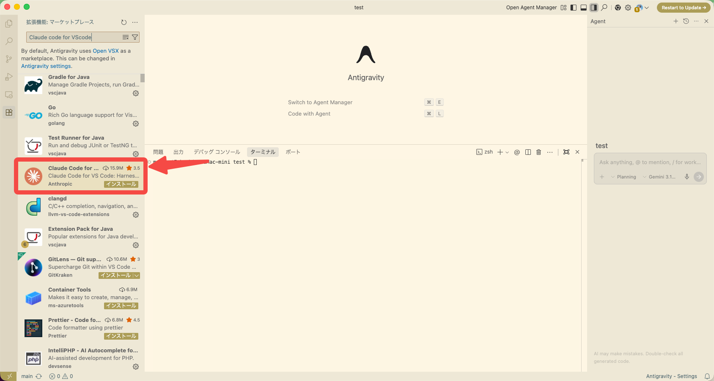
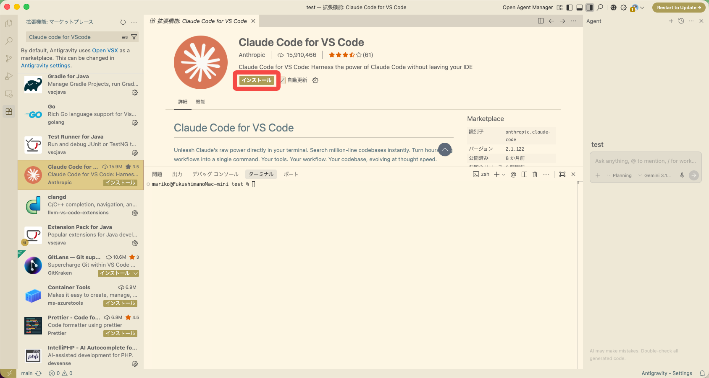
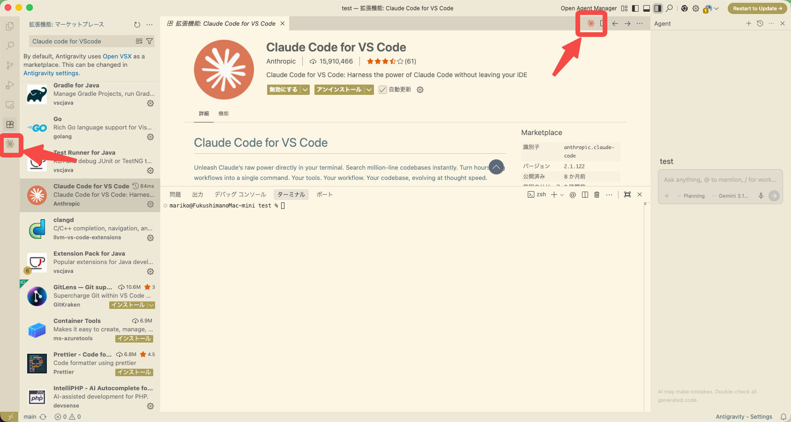
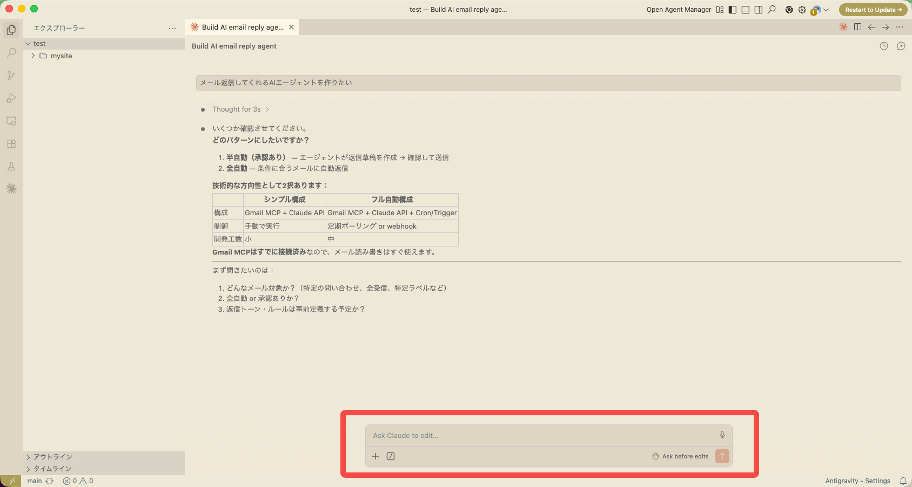

1
拡張機能を検索する
Antigravityのマーケットプレースから探します
1-1マーケットプレースを開く
- Antigravityを起動する
- 左サイドバーのブロックのようなアイコン（拡張機能）をクリック
- 検索欄に Claude Code for VS Code と入力
- Anthropic製のものを選択（赤枠のアイテム）

「Claude Code for VS Code」を検索して選択する
同名の拡張機能が複数表示される場合があります。Anthropic 提供・星マーク付きのものを選んでください。
2
インストールする
ボタンひとつで完了します
2-1インストールボタンをクリック
- 拡張機能の詳細ページが開いたら、「インストール」ボタンをクリック
- しばらく待つ（数秒〜数十秒）

「インストール」ボタンをクリック
2-2インストール完了を確認
ボタンが「アンインストール」に変わればインストール完了です。

「アンインストール」表示に変わればOK
Antigravityの再起動を求められた場合は、一度閉じて再度起動してください。
3
使ってみる
エディタ内からClaude Codeに話しかけられます
3-1エディタ内でClaude Codeを使う
インストール後は、画面右上のClaudeアイコンまたはエディタ下部の入力欄からClaude Codeに指示を出せます。

エディタ下部の「Ask Claude to edit...」から指示を入力できる
ターミナルのClaude Codeと同じアカウントで動作します。追加の設定は不要です。
日本語で「〇〇を作って」「このコードを直して」と入力するだけでOKです。
日本語で「〇〇を作って」「このコードを直して」と入力するだけでOKです。
💡 ターミナル版との違いは？
ターミナル版（
拡張機能版はエディタで開いているファイルを直接編集させたい時に便利です。どちらも同じClaudeが動いています。
claudeコマンド）はファイル操作や複雑なタスクが得意です。拡張機能版はエディタで開いているファイルを直接編集させたい時に便利です。どちらも同じClaudeが動いています。